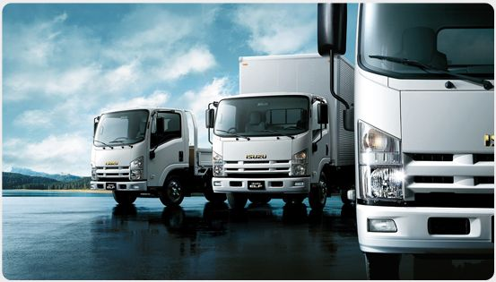

مقارنة بين النقل الذاتي والاستعانة بشركة: التكلفة مقابل الراحة

9 يناير 2025
10 دقائق قراءة
2,789 مشاهدة

هل تفكر في نقل أثاثك بنفسك أم الاستعانة بشركة؟ هذه المقارنة الشاملة ستساعدك في اتخاذ القرار الصحيح.
نظرة عامة على المقارنة
تحليل التكاليف
| بند التكلفة | النقل الذاتي | الشركة المحترفة |
|---|---|---|
| إيجار شاحنة (يوم واحد) | 300-500 ريال | مشمول في السعر |
| البنزين | 100-200 ريال | مشمول في السعر |
| مواد التغليف | 150-300 ريال | 50-150 ريال (أو مشمول) |
| عمالة إضافية | 200-400 ريال | مشمول في السعر |
| التأمين | 100-200 ريال | مشمول أو اختياري |
| الإجمالي | 850-1600 ريال | 2000-4000 ريال |
المزايا والعيوب
النقل الذاتي
المزايا:
- توفير 40-60% من التكلفة
- تحكم كامل في عملية النقل
- مرونة في التوقيت
- عناية شخصية بالأثاث
- لا توجد رسوم خفية
العيوب:
- جهد بدني كبير
- احتمال تلف الأثاث
- وقت أطول (2-3 أيام)
- مخاطر الإصابة
- تعقيدات قيادة الشاحنة
الشركة المحترفة
المزايا:
- سرعة وكفاءة في النقل
- خبرة في التعامل مع الأثاث
- تأمين شامل للأضرار
- معدات متخصصة
- توفير الوقت والجهد
العيوب:
- تكلفة أعلى بنسبة 40-60%
- قيود في التوقيت
- احتمال رسوم خفية
- أقل تحكم في العملية
- مخاطر اختيار شركة سيئة
متى تختار كل خيار؟
اختر النقل الذاتي إذا:
- المسافة أقل من 30 كم
- لديك أثاث قليل (غرفة-غرفتين)
- الميزانية محدودة جداً
- لديك أصدقاء لمساعدتك
- وقت كافي (3-4 أيام)
- تثق بقدرتك البدنية
اختر الشركة المحترفة إذا:
- المسافة أكثر من 30 كم
- لديك أثاث كثير (3+ غرف)
- أثاث ثمين أو حساس
- وقت محدود
- لا توجد مساعدة كافية
- تفضل راحة البال
حاسبة اتخاذ القرار
أدخل تفاصيل نقلك:
التوصية:
مستوى الثقة:
توصيات الخبراء
الأمان أولاً
إذا لم تكن واثقاً من قدرتك البدنية أو لديك قطع ثمينة، اختر الشركة المحترفة
قيمة الوقت
احسب قيمة وقتك المفقود. أحياناً تكون الشركة أوفر عند حساب الوقت
الخيار المختلط
يمكنك تغليف وتجهيز الأثاث بنفسك وتوظيف الشركة للنقل فقط